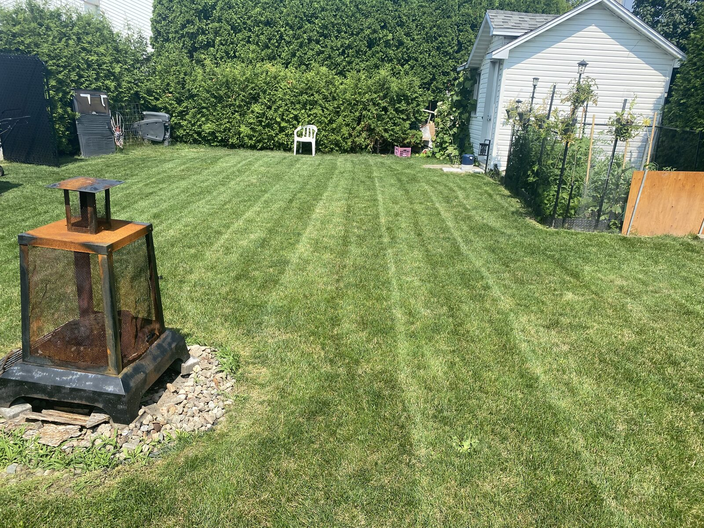
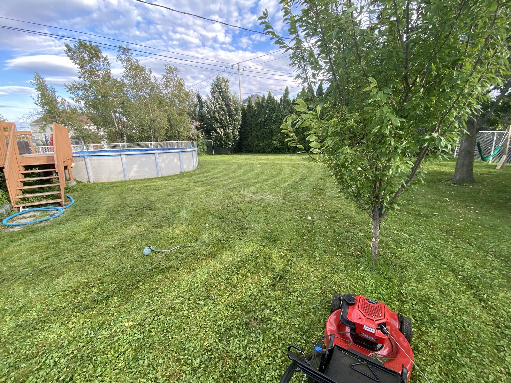
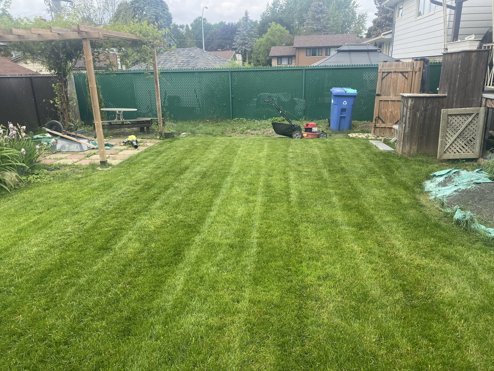
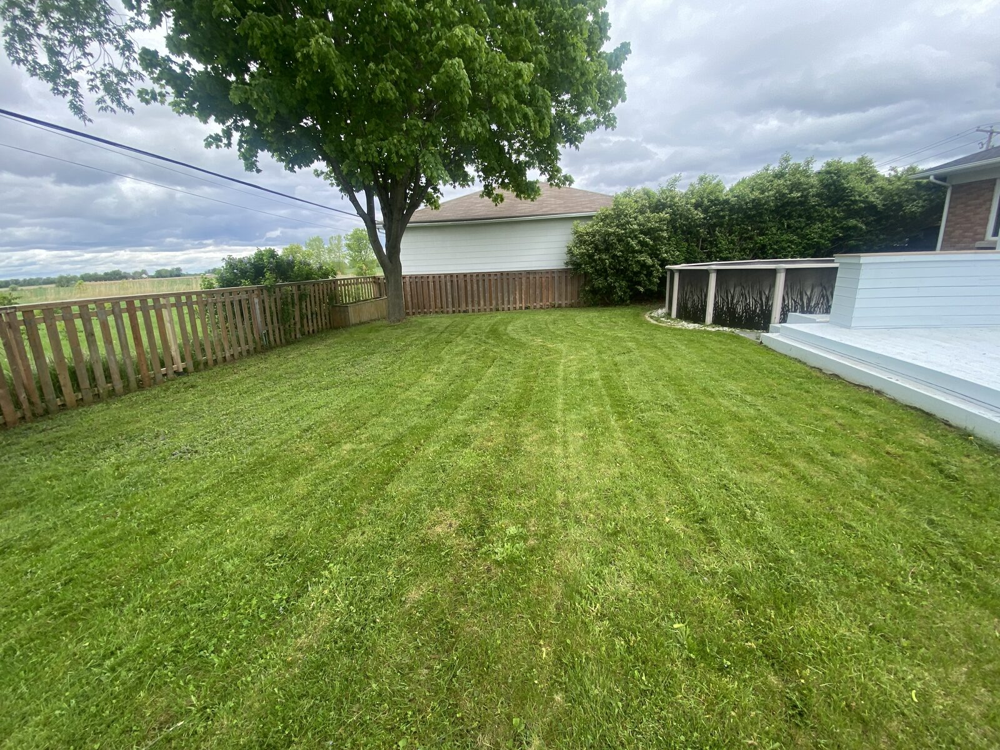
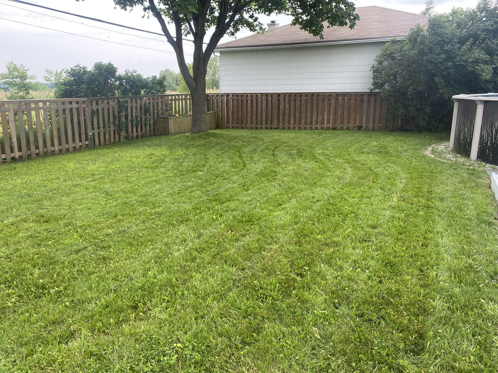
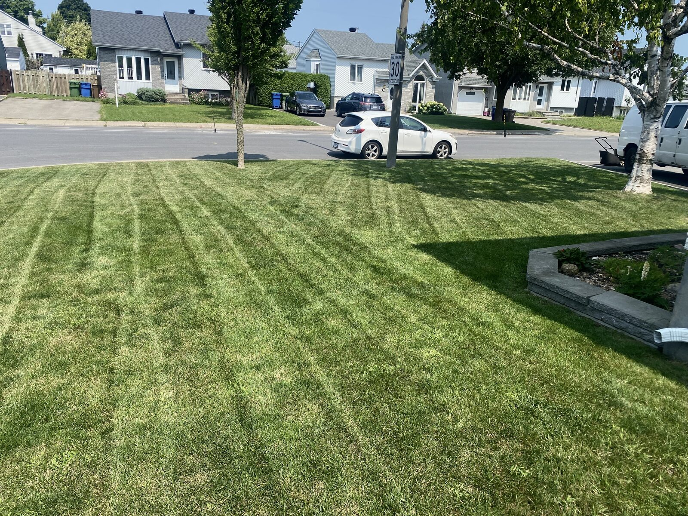

Un gazon propre et bien entretenu, à chaque passage. Rapide, soigné et sans tracas.
Un terrain bien entretenu fait toute la différence. Notre service de tonte professionnelle inclut la coupe de la pelouse, la taille des bordures et le nettoyage complet — pour que votre propriété soit impeccable après chaque visite.
Nous tondons votre gazon à la hauteur optimale pour sa santé et son apparence, en suivant les courbes et contours de votre terrain avec précision.
Les bordures le long des trottoirs, entrées, clôtures et plates-bandes sont taillées avec soin pour un résultat net et professionnel.
Une fois la tonte et la taille terminées, nous ramassons et nettoyons les déchets de tonte afin de vous laisser un espace propre et agréable.
Aperçu de nos réalisations.






Contactez-nous pour établir un horaire d'entretien qui vous convient. Nous offrons un service fiable et ponctuel, semaine après semaine.
Demander une soumission gratuite